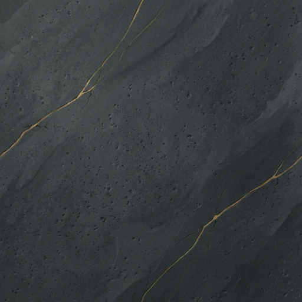

DAWN OF KIN · UI-0 R2 · OPERAÇÃO IDENTIDADE
Direção 2 — Marcos de Pedra e Eclipse
Monólitos assimétricos de basalto vulcânico com veios kintsugi dourados, estelas inclinadas de fundadores e maquetes em alabastro claro.
100% Arte Autoral · Validado na Godot 4.7.2 (Custom _draw + CLIP_CHILDREN)
720p & 1080p · Intel UHD Graphics 620
720p & 1080p · Intel UHD Graphics 620
Superfície Basalto Kintsugi + Alabastro

Silhuetas chanfradas assimétricas (12°–16°) inspiradas em estelas japonesas e kintsugi — une a dualidade Luz × Sombra ao futuro arquipélago.
Paleta & Contraste (WCAG AA/AAA)
Basalto
#1B1D20
Ouro Kintsugi
#DFBC72
Alabastro
#EFEADF
Musgo
#6E9158
Hierarquia Tipográfica & Informação
DAWN OF KIN · Linhagem Viva
Origem · União · Descoberta · Construção · Continuidade
Contadores tabulares: Madeira 24 · Pedra 14 · Alimentos 18 · 42% · 4,0 m/s
Iconografia Exclusiva
wood
stone
food
build
tasks
lineage
Botões & Estados Interativos
Normal
Hover
Alabastro
Inativo
Evolução Visual com a Civilização (Linguagem Futura)
Nível I · Acampamento
Pedras brutas em equilíbrio (cairn)
Pedras brutas em equilíbrio (cairn)
Nível III · Povoado
Estelas talhadas com veios dourados
Estelas talhadas com veios dourados
Nível V · Vila
Marcos monumentais em basalto e alabastro
Marcos monumentais em basalto e alabastro
Tratamento dos Fundadores & Emblema

Alden


Brena
Componente Exclusivo & Miniaturas

Peça de Maquete
Contraste Tátil: HUD em basalto escuro × peças de construção em alabastro claro que você pega como maquetes físicas sobre o terreno 3D.